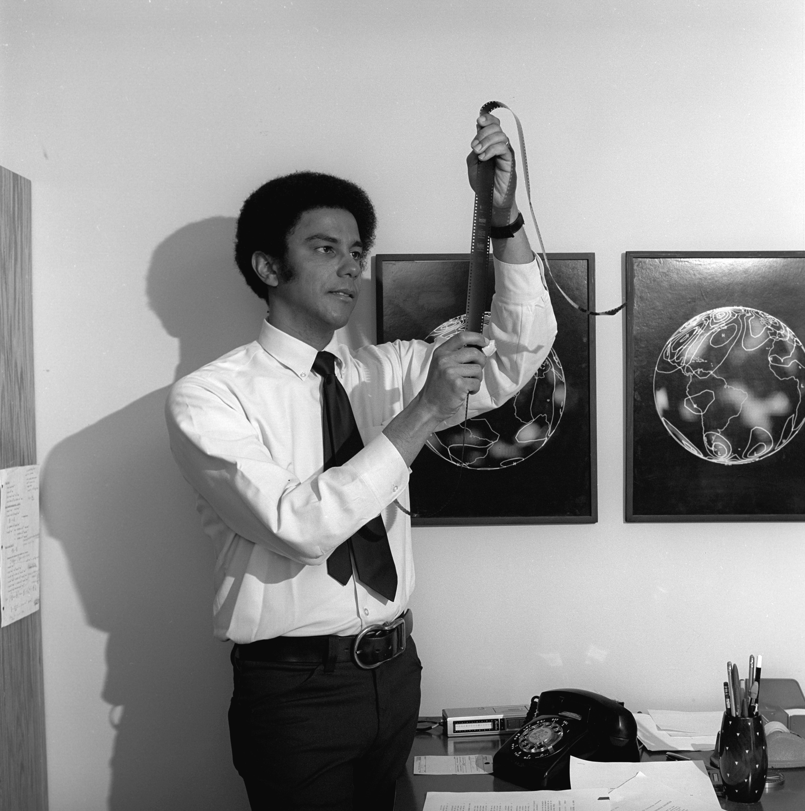
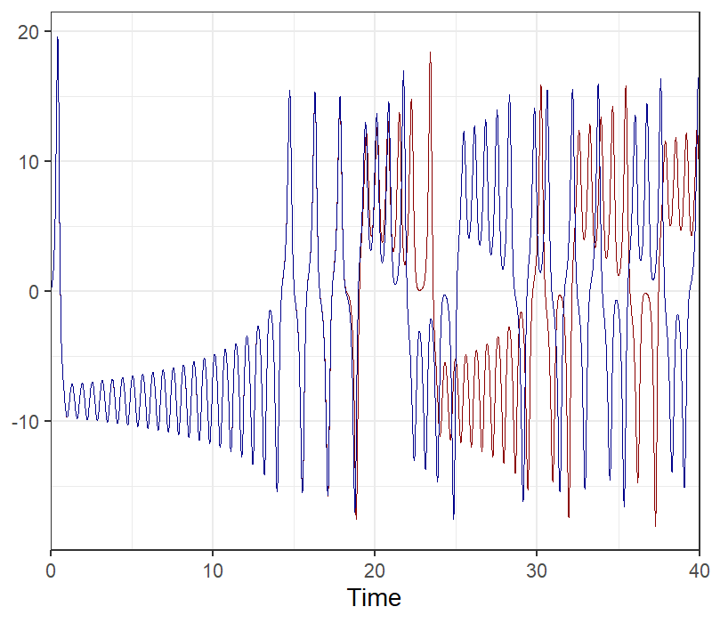
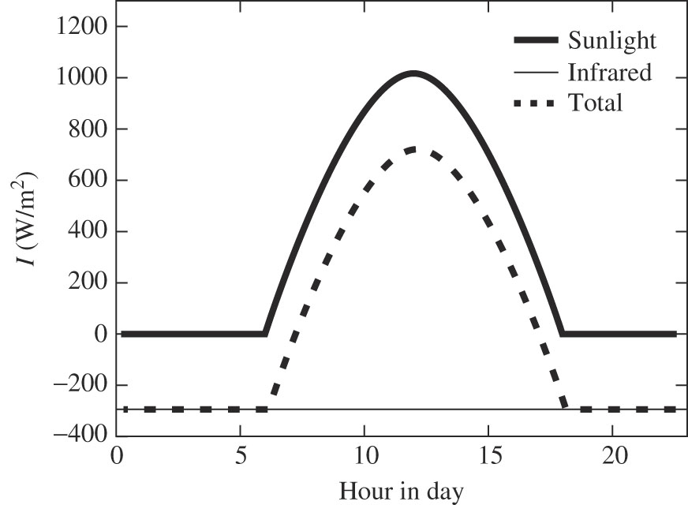
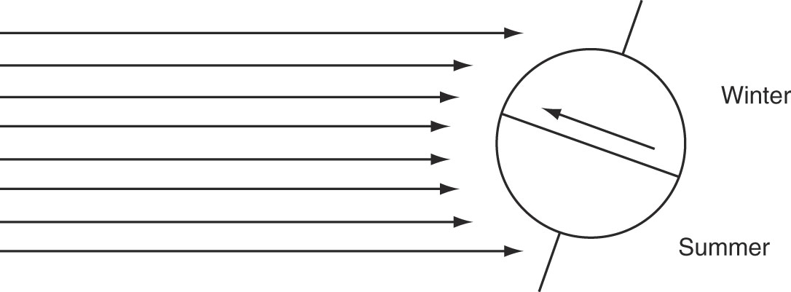
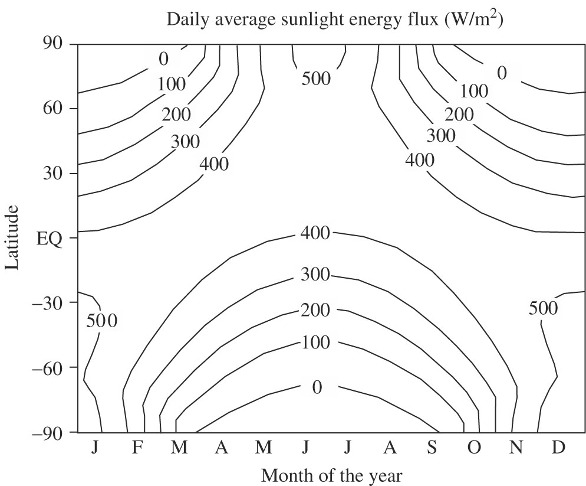
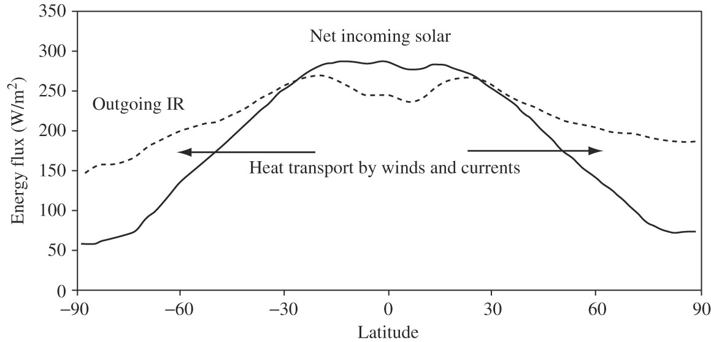
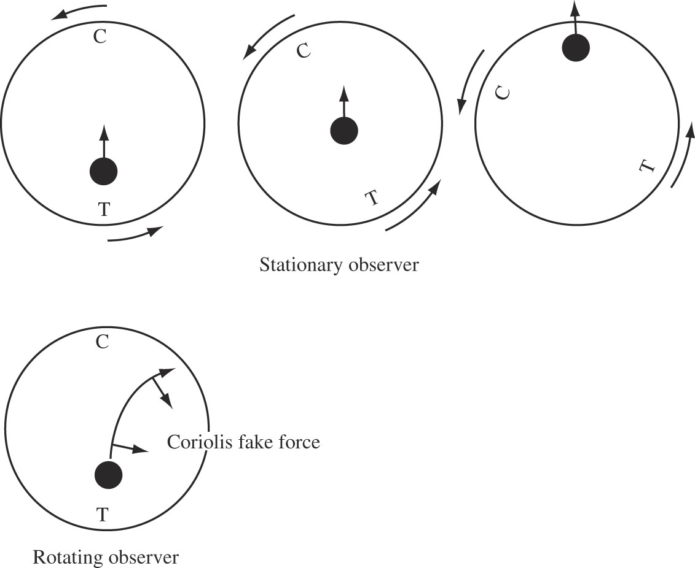
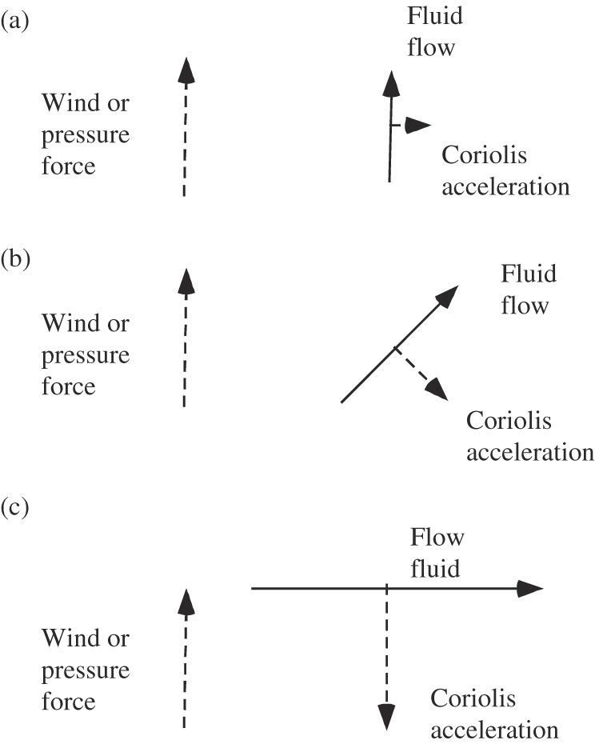
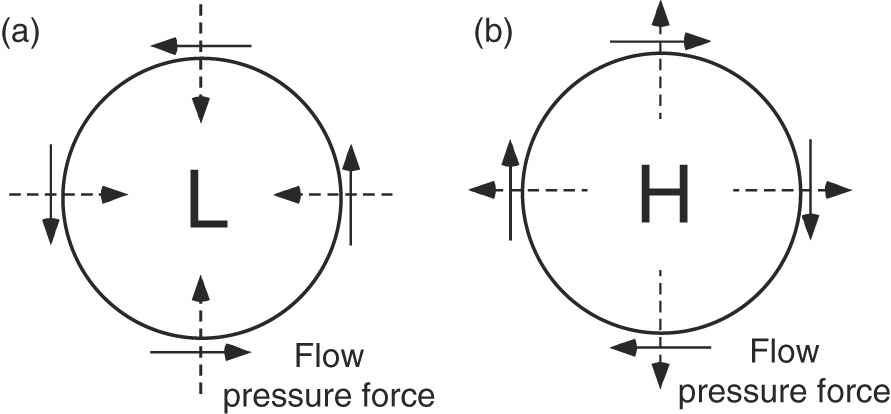

Weather and Climate
EES 2110
Introduction to Climate Change
Jonathan Gilligan
Class #10: Wednesday, February 01 2023
Black History Month:
Great Black Climate
Scientists
Warren M. Washington
- Born 1936, Portland OR
- B.S., 1958 (physics) Oregon State University
- Ph.D., 1964 (meteorology) Pennsylvania State University
- Scientist at National Center for Atmospheric Research (NCAR) since
1963
- One of the first developers of global climate models
- Pioneer in using parallel supercomputers for climate modeling
- Head of Climate Section, 1974–1987
- Director of Climate and Global Dynamics Division, 1987–1995

Warren Washington looking at microfilm of climate model results in 1973. (Photo by UCAR, Ginger Hein)
Warren Washington
- Honors:
- President American Meteorological Society (1994)
- Chair of National Science Board (2000–2006)
- National Academy of Engineering, since 2002
- Shared 2007 Nobel Peace Prize
- 2010 National Medal of Science
- 2019 Tyler Prize for Environmental Achievement
- Many more…

Chaos
Edward Lorenz
- 1961: Numerical weather prediction
- Simple computer model of the atmosphere
- Printed out results as tables of numbers
- Lorentz wanted to repeat a calculation
- Saved time by typing in results from a printout of a previous run
- The repeat run was wildly different from the original
- The printout rounded off results: 0.506127 would become 0.506
- Small changes to inputs became huge differences in output
The Butterfly Effect
-
Lorenz:
Two states differing by imperceptible amounts may eventually evolve into two considerably different states. …
If, then, there is any error whatever in observing the present state—and in any real system such errors seem inevitable—an acceptable prediction of an instantaneous state in the distant future may well be impossible. …
In view of the inevitable inaccuracy and incompleteness of weather observations, precise very-long-range forecasting would seem to be nonexistent.
-
Subsequent paper:
“Predictability: Does the Flap of a Butterfly’s Wings in Brazil Set Off a Tornado in Texas?”

- Output from Lorenz’s model:
- Two identical simulations, except the starting values are different by 0.001.
Predicting Climate
- The big uncertainties in weather prediction are about details
- Will it rain today or tomorrow?
- Will it rain in Nashville or 50 miles away?
- Averages are far more reliable
- Monthly or annual averages for temporal uncertainty
- Regional or global averages for spatial uncertainty
- Climate is about averages, so we can predict climate much more accurately than weather, and much farther into the future
- Computer Modeling:
- Ensembles:
- Run the same model many times with different initial conditions
- Model Inter-comparisons
- Run many different models and compare them
- Differences between model runs, or different models let us estimate uncertainties.
- Ensembles:
Fluctuating Heat
Fluctuating Heat
- Sunlight doesn’t fall evenly on earth
- Some places get more heat than others
- Infrared goes out to space all the time
- As earth moves, sunlight falls in different places
- Temperature:
- Rises when sunlight > IR
- Falls when sunlight < IR
- Diurnal variations (day and night):

Seasonal Variations
Why is summer hotter than winter?
-
Tilt of earth’s axis 
- The hemisphere that tilts toward the sun gets more sunlight
- Tilt is more important than changing distance to sun:
- Earth is closest to sun in January, farthest in July

Wind
What Causes Wind?
- Uneven distribution of sunlight causes uneven temperatures
- Temperature differences turn into pressure differences
- Pressure differences push air from high-pressure to low-pressure
- Wind
- Large areas of warm or cool air have high pressure
- Low pressure occurs where warm air meets cool air
- Wind moves heat from warm places to cold places.

Coriolis Force
- If the earth didn’t rotate on its axis, wind would blow straight from high-pressure to low-pressure
- But the earth rotates
- Pair up and take out a piece of paper
- Draw a circle
- Have one person rotate the paper while the other person draws a straight line from the center to the edge
- The line curves because the paper rotated while the pen was moving

Coriiolis Force
Coriolis Force
- Left: Camera is still while the Earth rotates
- Right: Camera rotates with the Earth
Geostrophic Flow
- Initially, wind follows pressure gradient from high to low
- Over time, Coriolis effect bends it to the right (Northern Hemisphere)
- Eventually, the wind ends up flowing at right angles to the pressure
force
- Then, pressure and Coriolis cancel out

Circular Geostrophic Flow
- If the pressure pattern is circular, gradient points in (low pressure) or out (high pressure)
- Wind starts blowing in or out along pressure gradient
- After time, Coriolis effect bends the wind to blow in a circular path
- This is why hurricanes and other storm systems form circles

Modeling Weather and Climate
Computer Models
- Weather and climate models use computers to solve
- Physics equations for heat-flow and the motion of the air,
- Chemistry equations for water evaporating and condensing, etc.
- Weather models have very high space- and time-resolution
- Very accurate for up to 10 days
- not much use for longer times
- Climate models have much lower space- and time- resolution
- Not so accurate about what happens on a given day in a given place
- Simulate climate for 100 years or more
- Over the past 50 years, they have been very accurate for predicting climate and climate change